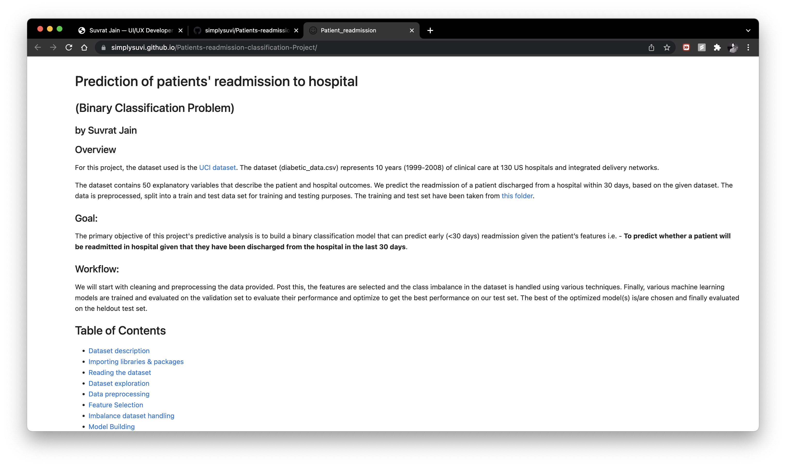
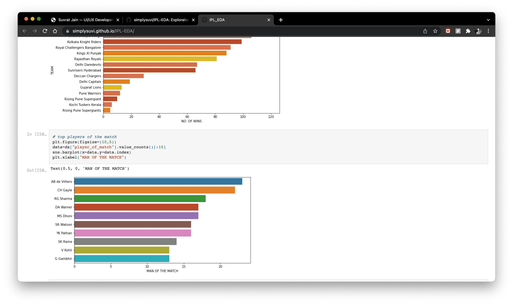
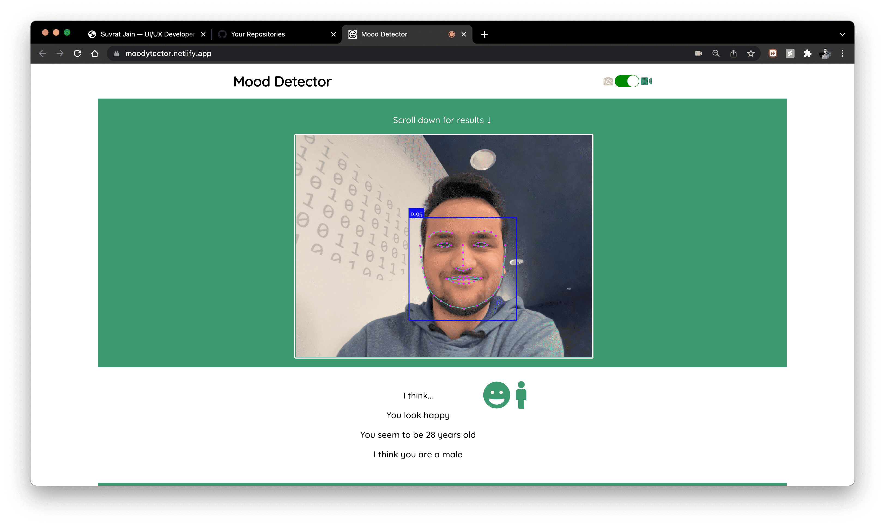
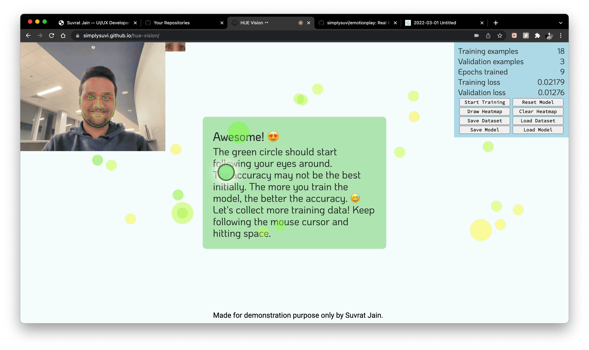
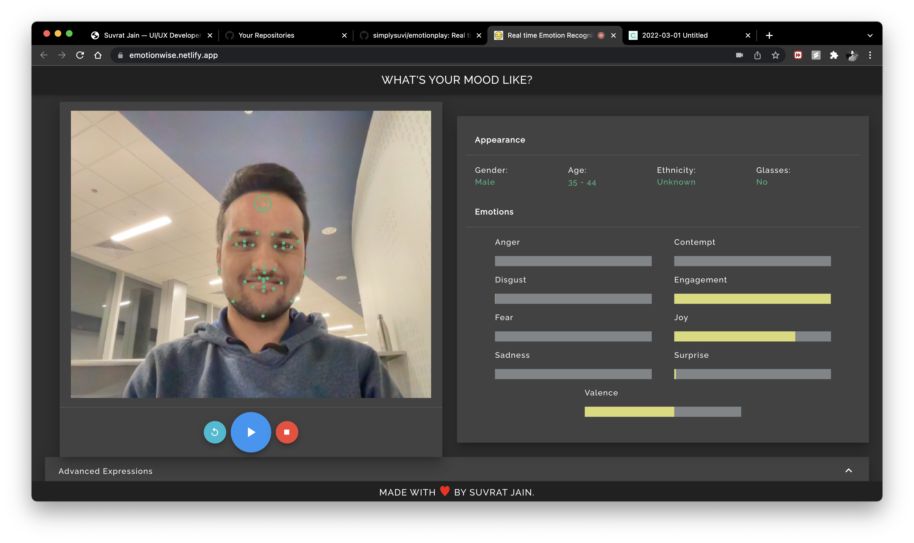

About me
Hi! I'm a years old self-learned web developer turned data scientist, with a knack for creativity and solving problems using data. I'm currently working towards my Masters in Data Science from Rochester Institute of Technology, NY.
I started learning to design, develop, and code around the age of 17 and never stopped. The fact that I was able to make something out of a few lines of code fascinated me, and still does!
My passion for data science stems from the desire to solve real-world problems using technology, a flair for identifying patterns to derive interesting insights from data, and data science is one such field where I can combine my love for technology with my love for problem solving.
As a beginner, I am currently focused on some projects based on machine learning and neural networks that help me solidify my understanding of various concepts crucial to build products driven by data. I have worked on a few projects dealing with imbalanced datasets, data wrangling, data visualizations etc. that I have shared below.
My 5 year goal is, to successfully marry...my love for building delightful websites and the knack for solving problems using data, to birth a data-driven product that helps in the greater good of the community.
I am constantly looking to enhance my skill set and work on new & exciting projects, and prove to be a reliable asset to both - myself & the organization I work with.
🙋🏻♂️If you are a company/organization looking for an enthusiastic individual for an internship/co-op opportunity, to contribute to your rapid growth, feel free to reach out to me via LinkedIn.
👋🏻Or if you want to drop a hi or brainstorm something that interests you about music, universe, data, or anything in between, feel free to reach out to me here.
education
M.Sc. (Data Science)
Rochester Institute of Technology, NYAugust 2021 - Present
Courses: Applied Statistics, Java & Python for Data Science, Neural Networks, Software Engineering for Data Science
B.Tech (Electronics & Communication Engineering)
Manipal Academy of Higher Education - DubaiSeptember 2017 - July 2019
Courses: Embedded Systems, Analog Communication, Digital Signal Processing using MATLAB, VLSI Network Design
work experience
Email Developer/Marketer
Merkle
Pune, Maharashtra, IndiaSeptember 2020 - August 2021
QA Associate
Merkle
Pune, Maharashtra, IndiaJanuary 2020 - September 2020
Web Developer (Intern)
Arachnomesh Technologies Pvt. Ltd.
Navi Mumbai, Maharashtra, IndiaJuly 2018 - September 2018
Software Developer (Intern)
G10 Consultancy Digital Pvt. Ltd
Mumbai, Maharashtra, IndiaMay 2017 - July 2017
SKILLS
Python
Java
HTML5
CSS3
JavaScript
Bootstrap
Angular JS
WordPress
PORTFOLIO
Predicting Patient Readmissions using Machine Learning
Binary classification using machine learning models to predict if hospital patients are readmitted within 30 days. Models: Logistic Regression, Decision Tree Classifier, Random Forest Classifier.
IPL Exploratory Data Analysis using Python and Jupyter notebook
Exploratory data analysis carried out on the IPL dataset for seasons 2008 - 2020. Data visualizations used to extract insights and factors contributing to victories and defeats.
Moodytector
Moodytector is a simple web application that detects facial features and emotions. Faci-api JS was used to build the majority of this app. There are three main features: emotion detection, age prediction, and gender prediction. The site dynamically updates on user input through webcam.
HUE Vision
A web application built using TensorFlow.js to detect and track eye movement through webcam. Application: Analyze users' gaze movement on your website in real time using a webcam. It can be useful for UX researchers when doing usability studies to understand how users respond to the aesthetics of your website.
EmotionWise
EmotionWise is a web application built with Affdex SDK by Affectiva that does real-time emotion recognition to learn the language of faces by visualizing its emotions in real time. Key features include: expression, appearance, glasses, gender & age.
FaceID
Facial authentication web app that detects faces and compares them with your previously stored facial data, if a match is found it logs you into your account. Built using face-api.js.
Try out the demo below!
SSU MUN Website
The Model United Nations is one of Sri Sri University's annual events which provides a platform for students to engage in meaningful discussions to solve real world problems and also learn about underrepresented nations and cultures. This is a responsive website created to showcase and provide information about the event. Built using HTML, CSS, JS.

You Are Special
Is there something which is keeping you upset or low? Worry not, am here to stay & cheer you up for as long as you wish.
This is a simple JS based compliment generator that gives you genuine compliments to cheer you up and hopefully, to make your day.
Made with ♥ using JS, HTML, CSS.